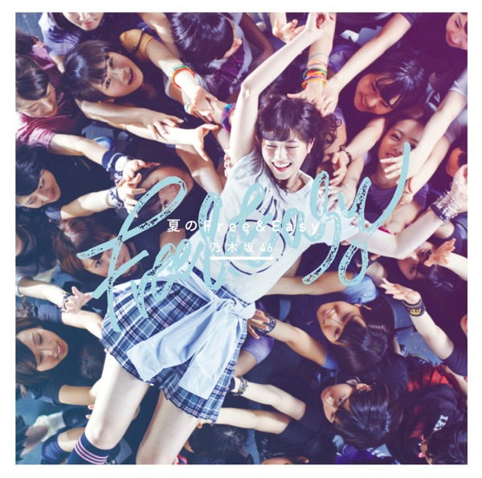

サカミチ
サカミチ無口なライオンむくちならいおん

初収録リリース「夏のFree&Easy Type-A」のジャケット
乃木坂46
発売日：2014-07-09
収録：夏のFree&Easy Type-A（9thSG）
種別：ユニット曲
作曲：Shusui、ヒロイズム
編曲：Shusui、ヒロイズム
ライブ披露：30件
歌唱メンバー（8名）
生駒里奈、井上小百合、斉藤優里、桜井玲香、西野七瀬、星野みなみ、若月佑美、堀未央奈
この曲が披露されたライブ（30件）
新しい順に20件まで表示しています（全30件）。
同じリリースの曲
夏のFree&Easy、何もできずにそばにいる、その先の出口、無口なライオン、ここにいる理由、僕が行かなきゃ誰が行くんだ？